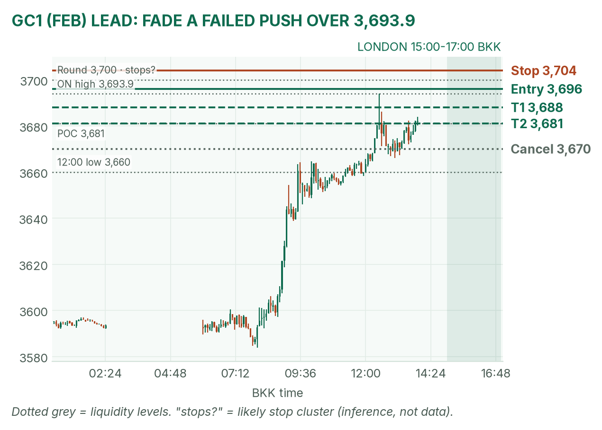
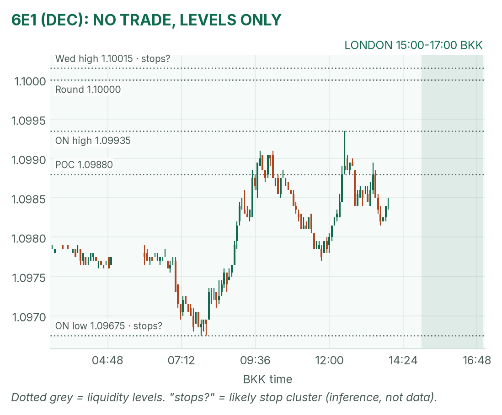

JIM · LONDON TRADE SHEET · FRI NOV 27 · LEAN EDITION
Gold ripped 3% and sits at its busiest price. The euro hasn't moved.
Window 15:00–17:00 BKK. Cut 14:00 BKK (TopstepX, completed 5-minute bars; GC is the February contract, 6E December). Levels only, flat by 17:00. Ideas, not advice.
Summary
Risk first: holiday-thin trading, and Spain's inflation prints at 15:00, right at the open.
GC: fade a failed push over 3,693.9 back to the POC. About 30%.
6E: no trade. No edge in a flat, quiet market.
The market story
Buyers returned after Thanksgiving; gold bounced off its lowest since September 2025. But yields rose about 7 bp, so bond prices fell: money left the safety of bonds. Higher yields raise gold's opportunity cost (what you give up by holding metal that pays no interest), and Fed hike bets still cap it. April calls it a holiday-thin rebound. Gold looks stretched; the euro is flat.
News (BKK)
Time
Event
Forecast
Prior
14:45
France flash inflation (y/y)
3.7%
not verified
15:00
Spain flash inflation (y/y)
not verified
4.9%
21:30
US half-day open (outside window)
–
–
Hot = euro up, gold softer; cold = the reverse. No-trade zones: 14:40–14:47 and 14:55–15:02. Source: Danske Bank via April's brief.
Levels to watch
Level
GC (Feb)
6E
Wednesday high / low
3,617.8 / 3,453.8
1.10015 / 1.0940
Overnight high / low (since 06:00)
3,693.9 / 3,583.9
1.09935 / 1.09675
Overnight POC / value area
3,681 / 3,593–3,682
1.0988 / 1.0972–1.0990
Last-2-hour high / low
3,693.9 / 3,660.0
1.09935 / 1.0978
Gold (GC1)
Rule: fade the 15:00–15:30 range edges back to the POC (busiest price). Model range 3,671–3,694 (median London range 23 points, only 4 sessions).
Entry
Sell 3,696 after 15:30, once a push over 3,693.9 slips back under
Stop
3,704, above the 3,700 round number
Targets
1R partial 3,688 · full 3,681 POC (1.9R)
Cancel
3,670 trades first, or no fill by 16:30
Probability
~30%, estimate: GC London fades led our 42-session study (not significant); trimmed for a strong trend day.
Stops likely cluster above 3,700 (inference). Fading a 3% up day is against the trend, so it needs the failed push first. April partly agrees: rates cap gold.

GC 5-minute bars to 14:00.
Scenarios to watch
Bullish: a 5-minute close above 3,704 aims for 3,720.
Bearish: a close below 3,660 aims for 3,635.
Euro (6E1)
Rule: trade 15:00–15:30 range breakouts. A pip is 0.0001. Model range 1.0974–1.0995. No trade: volume is about a tenth of a normal day, and 1.1000 breakouts failed to trigger on Nov 20 and 23.

6E 5-minute bars to 14:00. A 26-pip overnight range, pinned near 1.0988.
Scenarios to watch
Bullish: a close above 1.10015 aims for 1.1015.
Bearish: a close below 1.09675 aims for 1.0955.
NQ: 26,769, near its overnight high of 26,868.75. Not traded.
Before you click
ORB. GC London: 15:00–15:30 range, fade to POC. 6E London: same range, trade breakouts.
Checklist. Account room, daily rules, no release within 30 minutes, bias, level, setup tag, full plan, calm.
Reset. Hands off; breathe in 4, out 6, five times; name the feeling; say the plan.